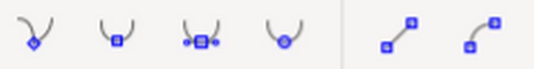

Edição de Vértices
Vértices, ou nós, são os pontos que utilizamos para distorcer uma forma, a edição desses pontos em programas de desenho vetorial é feita com uma ferramenta própria para este trabalho, no Inkscape é a ferramenta Editor de Nós. Em qualquer um desses softwares, os nós terão propriedades que definem como a distorção é feita, eles podem ser Cúspides, Suaves ou Simétricos. Com a forma selecionada e a ferramenta Editor de Nós ativa, verifique na área de trabalho do Inkscape a barra abaixo que é a barra de propriedades do editor de nós:
Nesta barra, os três primeiros ícones são apresentados na seguinte ordem: Nó Cúspide, Nó Suave e Nó Simétrico, vamos entender as diferenças.
Nó Cúspide
Permite que o vértice faça uma ponta, pois cada alça pode se mover de forma independente.
Nó Suave
Não permite que o vértice faça uma ponta pois as alças estão presas ao mesmo eixo, no entanto as alças podem ter tamanhos diferentes.
Nó Simétrico
Não permite que o vértice faça uma ponta pois as alças seguem o mesmo eixo e tem o mesmo tamanho, quando uma é aumentada a outra também é.
Os dois últimos ícones servem para transformar um segmento de linha em arco ou reta:
Converter em linha reta
É utilizado para converter um segmento da forma que possui uma linha curvada em linha reta, para tal, é preciso selecionar os dois nós do segmento.
Converter em arco
Serve para converter um segmento reto em arco, no entanto com a ferramenta editor de nós isso pode ser feito apenas clicando no segmento e arrastando.
Com o que já temos de informação, agora podemos começar e editar os vértices dos nossos desenhos (Os desenhos feitos na sessão anterior, se você ainda não fez, clique no botão Anterior, no início desta página):
1. Selecione o primeiro desenho e pegue a ferramenta editor de nós (N).
2. Mova os nós para uma posição mais adequada clicando dentro do deles e arrastando.
3. Mova as linhas que estão fora de posição clicando sobre elas e arrastando.
4. Os pontos p2, p5 e p8 do primeiro desenho devem ser convertidos em Nós Simétricos. O mesmo vale para o ponto p2 da segunda forma. O ponto p7 da segunda forma é um Nó Suave.
5. Após terminar, pegue a ferramenta seleção novamente e altere a cor dos objetos.
Salve seu desenho.
Para adicionar um nó em uma curva basta dar um duplo clique com a ferramenta editor de nós. Para excluir um
nó basta selecioná-lo e apertar delete.

Neste exercício você será desafiado a criar algumas formas com a ferramenta Caneta Bézier e ajustá-las com a ferramenta Editor de Nós. Observe as figuras abaixo e tente reproduzi-las no Inkscape:
Este desenho é simples de se fazer e basicamente pode ser feito apenas com edição de nós e operações booleanas.
Uma dica que pode te ajudar em todos os projetos que for fazer é que linhas curvas podem ser desenhadas retas!
Se tiver dificuldades com este exercício solicite o auxílio de seu instrutor.